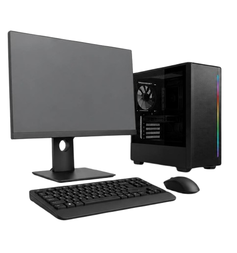
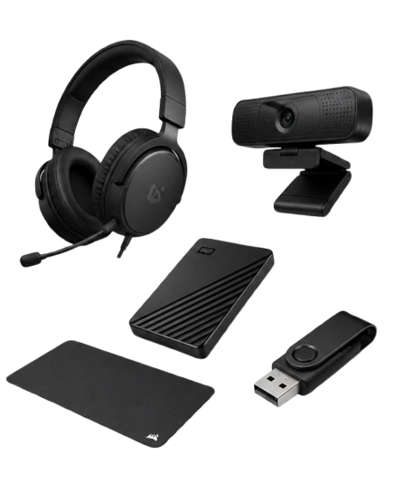
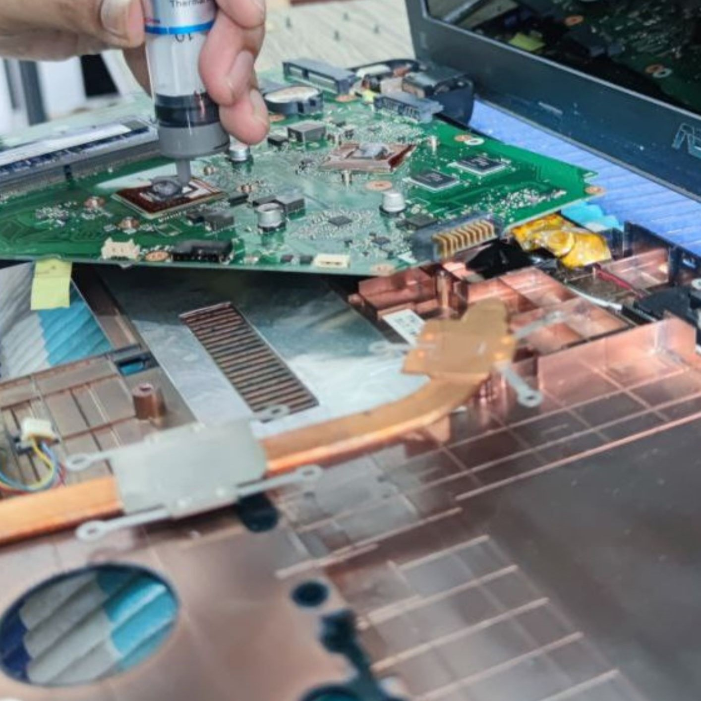
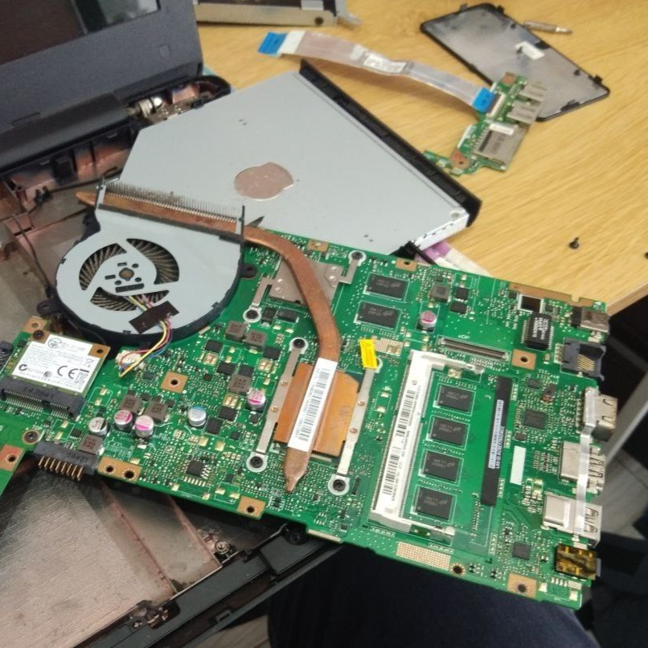
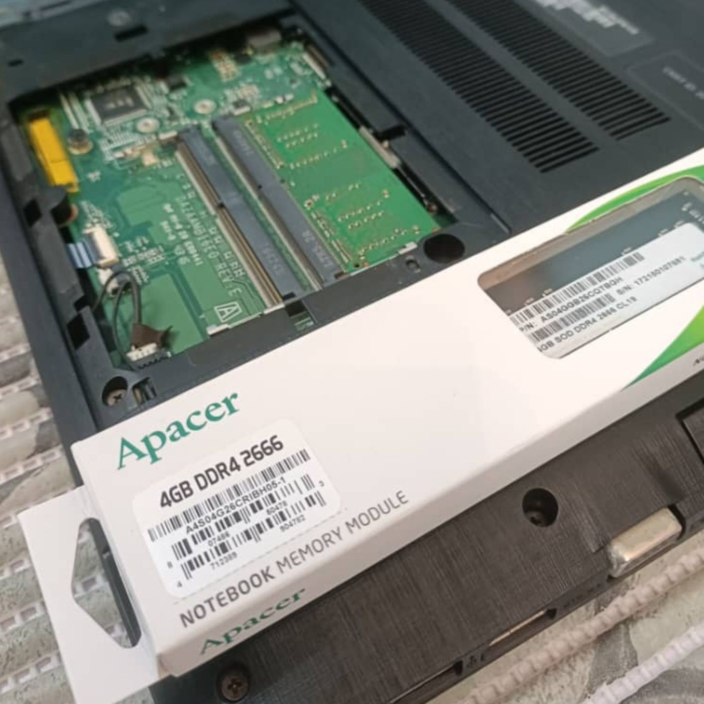
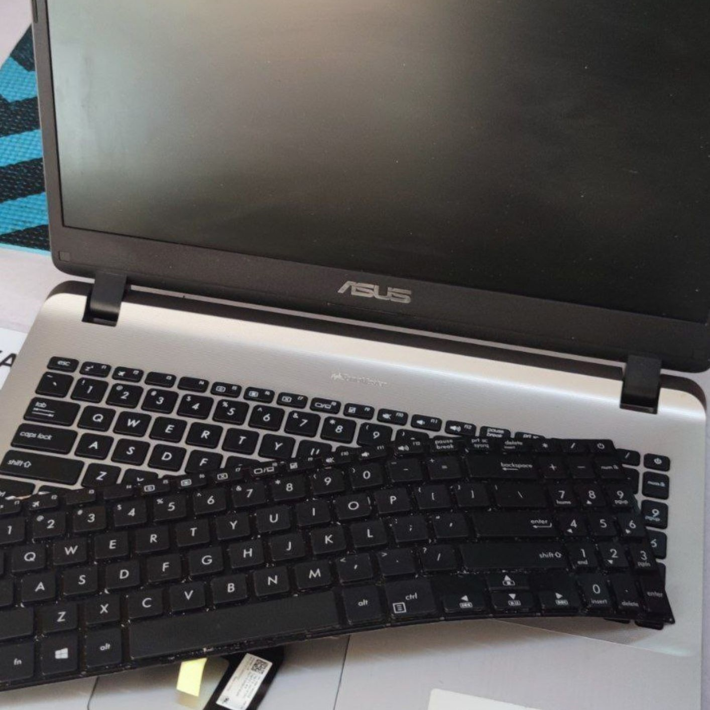
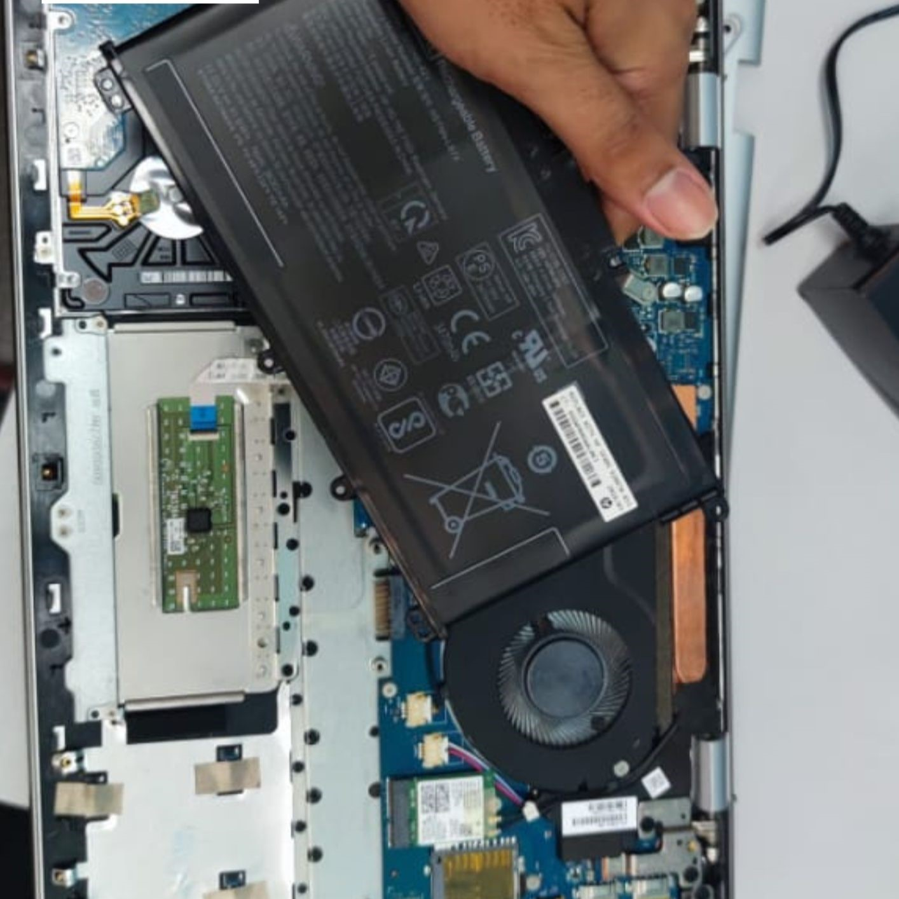
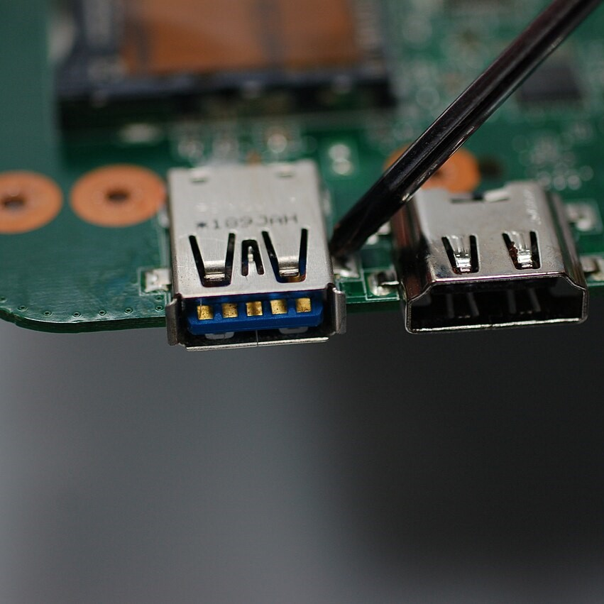

Produk Kami
Laptop Terpakai Gred Premium
Rangkaian laptop daripada jenama terkemuka yang berada di pasaran Malaysia. Unit gred ini menawarkan kualiti serta prestasi tinggi yang hampir setanding dengan unit baharu. Kelebihan utamanya adalah sokongan alat ganti yang lebih murah, jimat, dan mudah diperolehi di pasaran tempatan.
Laptop Terpakai Recond (Import)
Komputer riba terpakai gred terpilih yang diimport terus dari Jepun. Model ini menawarkan alternatif harga yang jauh lebih bajet dan ekonomi berbanding gred premium. Walaupun alat ganti bagi sesetengah model luar pasaran ini memerlukan kos berbeza, kualiti binaan dan ketahanan sistemnya tetap berada pada tahap yang sangat memuaskan.
Laptop Baharu (Original Brand New)
Unit baharu yang dibekalkan terus dari kilang pengeluar rasmi lengkap bersama perlindungan waranti pengilang yang lebih lama. Walaupun memerlukan pelaburan kos yang lebih tinggi, pilihan ini memberikan anda akses kepada integrasi teknologi terkini seiring dengan keperluan perisian semasa.
Komputer Desktop Terpakai Gred Premium
Sistem komputer 'Custom Built' yang dipasang menggunakan komponen berjenama untuk pelbagai profil spesifikasi kerja. Menawarkan fleksibiliti prestasi daripada tahap standard sehinggalah berkuasa tinggi. Kelebihan sistem ini terletak pada kemudahan naik taraf (upgrade) serta kos alat ganti yang jauh lebih kompetitif kerana sifat komponennya yang universal.
Komputer Desktop Terpakai Recond (Import)
Komputer desktop kompak yang diimport khas dari Jepun. Menawarkan penyelesaian perkakasan pada harga terendah dalam pasaran. Model ini biasanya hadir dalam reka bentuk jenis Slim Desktop korporat (bukan Tower PC standard), menjadikannya sangat menjimatkan ruang kerja walaupun penyelenggaraan komponen dalaman memerlukan parts yang lebih spesifik.
Komputer Desktop Baharu
Sistem komputer meja serba baharu terus dari pengilang dengan jaminan perlindungan waranti yang menyeluruh dan panjang. Pelaburan jangka masa panjang yang optimum bagi memastikan operasi harian anda berjalan lancar tanpa gangguan menggunakan pemproses (processor) serta arkitektur teknologi terkini.
Aksesori & Peranti Sisi (Peripherals)
Lengkapkan ekosistem kerja anda dengan pelbagai pilihan mouse (kabel & wireless), headphone berprestasi jernih, charger laptop OEM/Original, serta kabel sambungan berkualiti tinggi seperti HDMI dan VGA untuk paparan yang stabil.
Komponen Rangkaian & Adapter
Selesaikan masalah sambungan internet atau pemindahan data anda menggunakan USB Dongle Adapter Wireless berkelajuan tinggi, Bluetooth receiver, dan pelbagai gajet penyesuai pintar bagi memudahkan urusan tugasan harian anda.



Servis Kami

Gel Thermal & Cucian Kipas
Servis pembersihan habuk menyeluruh pada kipas penyejuk, lubang udara, dan papan induk (motherboard) serta penggantian gel thermal paste gred premium pada pemproses (processor) untuk mengelakkan masalah laptop menjadi panas (overheating).
Motherboard Laptop
Menyediakan kepakaran teknikal peringkat tinggi dalam mengesan litar pintas (short circuit), kerosakan IC power, dan membaiki komponen papan induk laptop dengan jaminan perlindungan waranti sehingga 6 bulan.


Naik Taraf & Custom Sistem
Servis menaik taraf storan SSD berkelajuan tinggi dan RAM untuk mengatasi masalah sistem lambat (lagging). Kami turut menawarkan khidmat modifikasi serta kustom spesifikasi laptop mengikut bajet dan keperluan perisian anda.

Penukaran Keyboard & Body
Khidmat penggantian papan kekunci (keyboard) yang rosak atau tidak berfungsi. Kami juga menawarkan servis membaiki masalah fizikal seperti kerangka (body) laptop yang pecah serta masalah engsel (hinge) yang longgar atau patah.
Penukaran Bateri Laptop
Penyelesaian bagi masalah bateri laptop yang kembung, tidak menyimpan cas (drain fast), atau perlu sentiasa dipasang pada plug. Kami membekalkan bateri pengganti yang berkualiti tinggi dan selamat untuk pelbagai model.


Pembaikan Port USB
Kami mempunyai kepakaran khusus untuk membaiki, mematri semula, atau menggantikan port USB, audio jack, dan port pengecasan yang longgar pada papan induk (motherboard) secara selamat dengan kos yang sangat berpatutan.
Maklum Balas
I’ve sent my laptop in twice with different issues, and both times the computer expert managed to fix them efficiently. Great service! The technician explains the problem clearly and informs the owner of the estimated cost beforehand, so you’ll know exactly what to expect. If you’re in Sungai Petani, this is definitely a recommended place to send your device. Fast service, friendly staff, and most importantly, reasonable prices that match the damage. No hidden charges, just honest and reliable work
- Afifah Mohdnoor
Got my MacBook pro fixed here!! They provide a very good service, they explain to me everything about the process to fix my MacBook, their service also fast and they have a very reasonable price! If you have a problem with your laptop or MacBook I would highly recommend you this one. And all of them are so friendly!! I am so satisfied with everything!!
- Anisha
I decided to send my laptop to Pakar Laptop Hypercom Technology for repair, and I'm delighted with the experience. The entire process was seamless, thanks to their helpful and friendly staff. They handled my laptop with great care and efficiently resolved the issue. I greatly appreciated their regular updates on the repair progress. When I finally received my laptop back, it was in impeccable condition, and the problem had been completely resolved. I'm truly impressed with their professionalism and expertise in laptop repairs. Without hesitation, I highly recommend Pakar Laptop Hypercom Technology for all your laptop repair needs.
- Ummi Sabirin
Lokasi Kedai
Pakar Laptop Hypercom Technology
No. 9, Jalan Merbok,
Taman Pekan Baru,
08000 Sungai Petani, Kedah
Hubungi & Waktu Operasi
No. Telefon:
+6017-505 1815
+6019-599 2715
Waktu Operasi:
Sabtu & Ahad (10:00 AM - 6:30 PM)
Isnin - Khamis (10:00 AM - 7:00 PM)
Jumaat (Cuti)